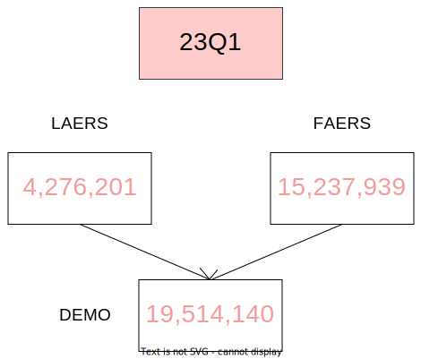
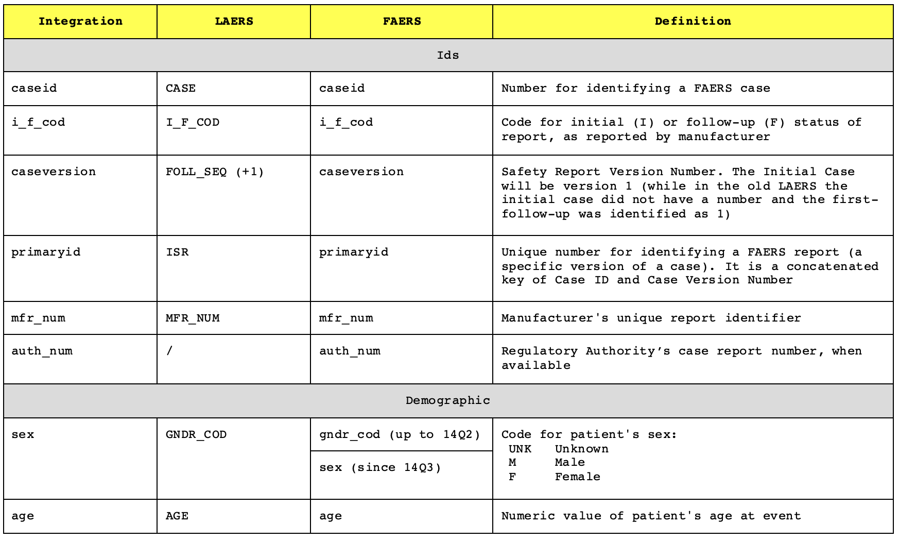
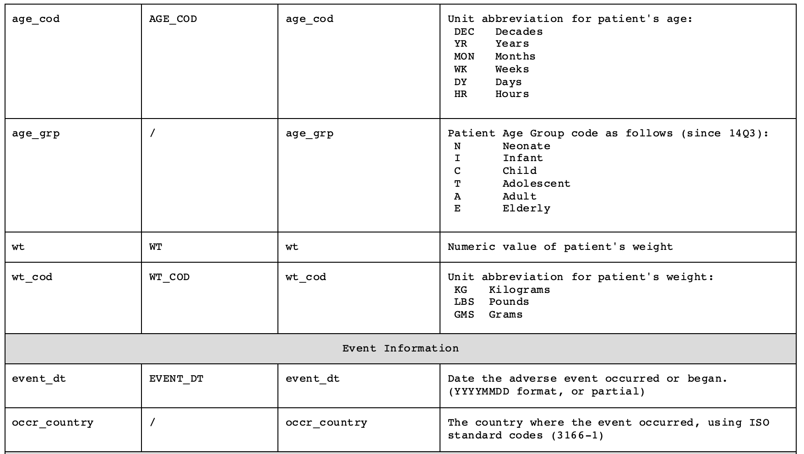
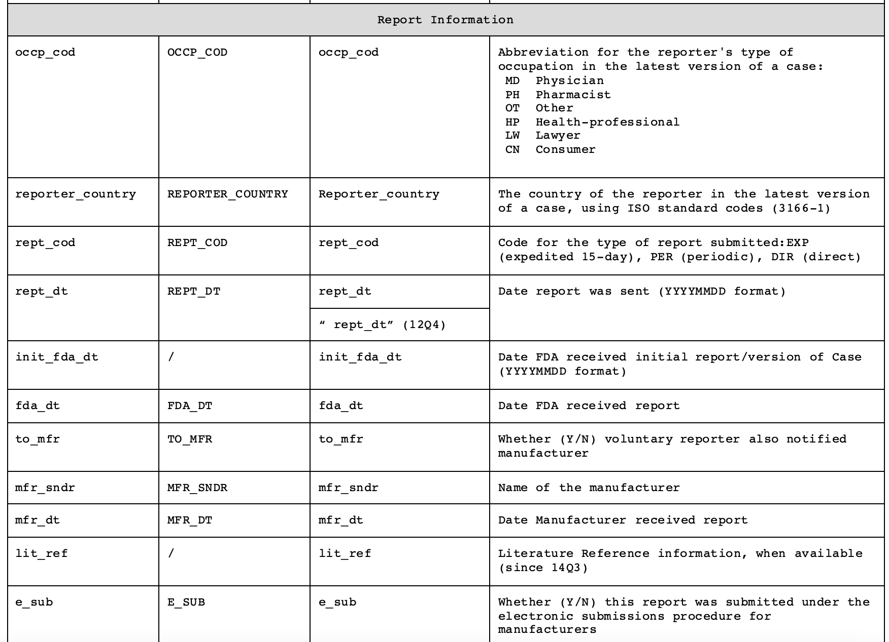
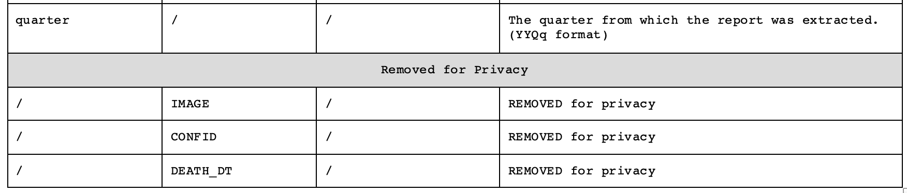
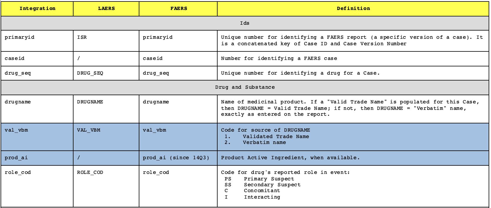
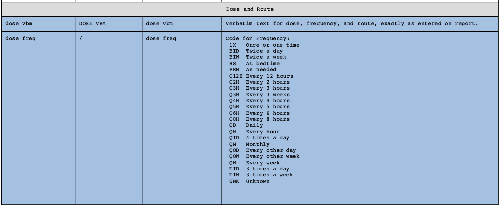
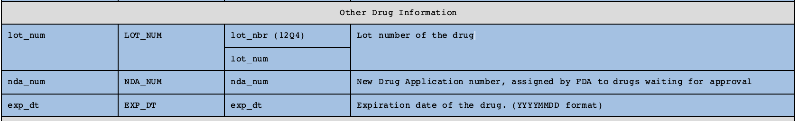
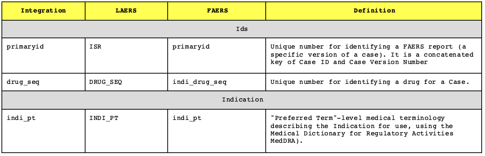

## Set up packages-------------------------------------------------------------
if (!require("pacman")) install.packages("pacman")
pacman::p_load("tidyverse","data.table","janitor","foreach","xml2","rvest")Documentation
Quarterly Data Features
You can obtain quarterly data files from the Food and Drug Administration Adverse Event Reporting System by visiting the website https://fis.fda.gov/extensions/FPD-QDE-FAERS/FPD-QDE-FAERS.html. These files are available in both ASCII and XML formats. For our work, we focus on the ASCII files, which use the “$” character to separate different fields. It’s important to note that neither of these file formats includes all possible data fields. If you need access to all the information, you can make a request through the Freedom of Information Act. When working with the ASCII files, you should refer to the “CASE” field for LAERS ASCII files and the “CASEID” field for FAERS ASCII files.
The data is organized into quarters, representing the four three-month periods of the year: January-March, April-June, July-September, and October-December. The first quarter of the FAERS data is January-March 2004. It’s essential to understand that the quarter refers to the date the report was received by the FDA. Therefore, the FAERS can collect reports about events that occurred before 2004 as well.
Each quarter is further divided into several datasets that contain specific information:
DEMO: Demographic and administrative information.
DRUG: Medical products and posology.
REAC: Adverse events.
OUTC: Outcomes.
RPSR: Report sources.
THER: Temporal information about therapies.
INDI: Indications.
The name of each file follows a specific format: <file-descriptor>yyQq. Here, <file-descriptor> represents the four-letter dataset name mentioned earlier, ‘yy’ indicates a two-digit identifier for the year, ‘Q’ is the letter Q, and ‘q’ is a one-digit identifier for the specific quarter. For instance, DEMO12Q4 represents the demographic file for the fourth quarter of 2012.
Each extract includes a set of seven ASCII data files that cover the entire quarter. Starting from 19Q1, each quarter also includes a DELETED file, which contains a list of report identities that should be excluded from the database (the so-called nullified reports). The decision to exclude these reports is made by the FDA or Manufacturers for various reasons, with the aim of aligning the Quarterly Data Extract (QDE) with the public dashboard.
Over time, the data fields have been updated. The conversion from the Legacy Adverse Event Reporting System to the new FDA Adverse Event Reporting System (FAERS) took place in September 2012 (12Q3). To prevent the loss of reports, the first extract of FAERS also includes reports from July 2012.
Data fields have been updated through time, and September 2012 (12Q3) marks the conversion from the Legacy Adverse Event Reporting System to the new FDA Adverse Event Reporting System (FAERS). To avoid the loss of reports, the first extract also includes reports from July 2012.
In the previous LAERS database, the data was based on Individual Safety Reports (ISR), where each ISR represented a separate version of a case (e.g., Initial, Follow-up 1, Follow-up 2, and so on). In contrast, the new FAERS database is case-based, where each case can have one or more versions starting from version 1. Intermediate versions may be missing if multiple updates were reported during the same quarter.
Lastly, it’s important to note that the LAERS data was compiled in uppercase, while the FAERS data is in mixed case.
Further details about data features are provided in the following paragraphs.

The Entity Relationship Diagram (ERD) of the FAERS illustrates the relationships between different datasets.
The “primaryid” attribute is used to identify a specific version of a caseid. It serves as the primary key in several datasets.
DEMO dataset: In the DEMO dataset, there should be only one “primaryid” value, but there can be multiple “caseid”s associated with that “primaryid”.
REAC, OUTC, RPSR, and DRUG datasets: The “primaryid” attribute serves as the primary key in these datasets. Each dataset can have multiple rows with the same “primaryid” value, indicating multiple reactions, outcomes, report sources, or drugs associated with a particular case.
THER and INDI datasets: The combination of “primaryid” and “drug_seq” attributes is used to join these datasets with the DRUG dataset. The “primaryid” and “drug_seq” together act as a composite key to establish the relationship between the THER and INDI datasets with the DRUG dataset. This relationship implies that multiple therapies or indications can be associated with a specific drug for a particular case.
Cleaning pipeline
In the following steps, we outline the procedure for cleaning the data. It’s important to note that you don’t need to understand every line of code to obtain a cleaned database. You can simply run the provided script or use the already cleaned database. However, it is crucial to read the accompanying text to comprehend how the pre-processing steps impact the subsequent analyses and interpretation. In the case you want to run the script, please include the script, along with the project, in a folder named “DIANA”.
Please ensure you have an internet connection as the script will download the necessary tools and FAERS quarterly data from the internet.
1. Set up
a. Import Tools
To perform the analyses, certain tools are required. R, an open-source software, enables the utilization of packages containing algorithms designed for specific operations. In the process of cleaning the FAERS data, the following libraries are utilized:
pacman: package to help importing other packages
tidyverse: A collection of packages (including ggplot2, dplyr, tidyr, and others) that provide a consistent and powerful set of tools for data manipulation, exploration, and visualization.
data.table: A package that extends the functionality of data frames in R, providing a fast and efficient way to manipulate large datasets.
janitor: A package that offers functions to clean and tidy messy datasets, facilitating data cleaning tasks.
foreach: A package that provides a looping construct for iterating over elements in parallel or sequentially. It is often used in combination with other packages for parallel computing, shortening preprocessing time.
xml2: A package for working with XML files, allowing you to parse, manipulate, and extract information from XML data.
rvest: A package that enables web scraping in R by providing functions to extract information from HTML web pages.
.svg)
b. Download FAERS
We have provided a script that facilitates the automatic download of FAERS quarterly data in ASCII file format from the FDA website. The duration of this step can vary depending on factors such as internet speed and memory capacity. In our tests, the download process took between 1 hour and 25 minutes (with a download speed of 74.4 Mbps) to 2 hours (with a download speed of 8.68 Mbps). However, it is important to note that the actual duration may be shorter or longer, as it can be influenced by individual circumstances.
.svg)
## Download FAERS--------------------------------------------------------------
options(timeout=500)#increase if it times out because of low wifi power
FAERS_url <- "https://fis.fda.gov/extensions/FPD-QDE-FAERS/FPD-QDE-FAERS.html"
pg <- read_html(FAERS_url)
links_to_QD <- html_attr(html_nodes(pg, "a"), "href")
links_to_QD <- links_to_QD[grepl(".zip",links_to_QD) & grepl("ascii", links_to_QD)]
dir.create("Raw_FAERS_QD")
for (file in links_to_QD){
zip_name <- file.path("Raw_FAERS_QD", basename(file))
download.file(file, zip_name)
folder_name <- gsub(".zip","",zip_name)
dir.create(folder_name)
unzip(zip_name,exdir=folder_name)
file.remove(zip_name)
}
file.rename("Raw_FAERS_QD//faers_ascii_2018q1/ascii/DEMO18Q1_new.txt",
"Raw_FAERS_QD//faers_ascii_2018q1/ascii/DEMO18Q1.txt")c. Better Storage
Each TXT ASCII file in the dataset has entries separated by a $ sign. To optimize memory usage, we have imported and saved these datasets in the RDS format. This format reduces the amount of memory required and improves the speed of reading and writing files.
During the initial import, we encountered some issues with # signs, single quotes (’), and apostrophes, which caused conflicts during the import process. Additionally, we discovered inconsistencies in the number of fields between the header lines and data lines. This inconsistency was caused by a missing $ sign at the end of the header line, leading to improper data reading.
Furthermore, we manually integrated the files to address the following errors:
In DRUG2011Q2, there was a missing newline at line 322966.
In DRUG2011Q3, there was a missing newline at line 247895.
In DRUG2011Q4, there was a missing newline at line 446737.
With the script, we automatically resolve these errors and conflicts, allowing for a smoother data processing experience.
.svg)
##Improve storage--------------------------------------------------------------
faers_list <- list.files(path="Raw_FAERS_QD/",
recursive=T,pattern=".TXT",
ignore.case = T, full.names = T)
faers_list <- faers_list[!grepl("STAT|SIZE",faers_list)]
dir.create("Clean Data")
write.csv2(faers_list, "Clean Data/faers_list.csv")
## correct for missing newlines
correct_problematic_file <- function(file_path, old_line) {
lines <- readLines(file(file_path,open = "r"))
lines <- unlist(strsplit(gsub(old_line,
gsub("([0-9]+)$","SePaRaToR\\1",old_line),
lines,fixed=T),
"SePaRaToR"))
writeLines(lines, con = file_path)
}
correct_problematic_file("Raw_FAERS_QD//aers_ascii_2011q2/ascii/DRUG11Q2.txt",
"\\$\\$\\$\\$\\$\\$7475791")
correct_problematic_file("Raw_FAERS_QD//aers_ascii_2011q3/ascii/DRUG11Q3.txt",
"\\$\\$\\$\\$\\$\\$7652730")
correct_problematic_file("Raw_FAERS_QD//aers_ascii_2011q4/ascii/DRUG11Q4.txt",
"021487\\$7941354")
## store to rds
store_to_rds <- function(f){
name <- gsub(".TXT",".rds",f, ignore.case = T)
print (name)
cn<- unlist(strsplit(readLines(file(f),n=1),split = "\\$"))
x <- read.table(f,skip=1,sep="$", comment.char = "",quote="",row.names = NULL)
colnames(x) <- cn
saveRDS(x,file=name)
closeAllConnections()
}
invisible(lapply(faers_list, store_to_rds))2. Merge quarters
We initiated the process of merging quarters within each dataframe in the relational database, beginning with the DEMO dataset. We first merged the quarters for the LAERS data and then proceeded with the FAERS data. During this process, we encountered and solved several conflicts:
names of the variables were not constant, not only between LAERS and FAERS but also among different quarters within FAERS. We standardized them.
not all the columns were compiled. We removed columns for which values were not provided, mainly because of privacy.
some columns were duplicated in some quarters, for example due to a misspelling in the column name. We collapsed their values into a unique column.
the missing of a data could be recorded as either “” or NA. We converted everything to NA.
To address these conflicts, we built a function and documented the details of merged and excluded variables, providing a step-by-step explanation of the script. Furthermore, we defined a variable with information about the quarter of year in which the drug was received by the FDA.

faers_list <- read.csv2("Clean Data/faers_list.csv")$x
unify_data <- function(files_list, namekey, column_subset,
duplicated_cols_x,duplicated_cols_y) {
i <- 0
foreach (f = files_list) %do%
{name <- gsub(".TXT", ".rds", f, ignore.case = TRUE)
print(name)
x <- readRDS(name)
x <- x[!is.na(names(x))]
quart <- substr(name, nchar(name) - 7, nchar(name) - 4)
x <- setDT(x)[, quarter := quart]
names(x) <- namekey[names(x)]
if (i > 0) {
y <- rbindlist(list(y, x), fill = TRUE)
} else {
y <- x
}
i <- i + 1
}
if (sum(!is.na(duplicated_cols_x))>0){
for (n in 1:length(duplicated_cols_x)){
y[is.na(get(duplicated_cols_x[n])),
(duplicated_cols_x[n]) := get(duplicated_cols_y[n])]
}
}
removed_cols <- setdiff(colnames(y),column_subset)
cols <- colnames(y)[colnames(y) %in% column_subset]
y <- y[, ..cols]
y[y == ""] <- NA
y <- y %>% distinct()
print(paste0("The following columns were lost in the cleaning: ",
paste0(removed_cols,collapse = "; ")))
return(y)
}DEMO
To ensure a cleaner and conflict-free database, the following steps were taken during the merging process for the DEMO dataset:
Variables “IMAGE,” “CONFID,” and “DEATH_DT” were excluded from the dataset. This was done to adhere to privacy guidelines. In fact, these variables were not even included in the FAERS data.
The FAERS variable “sex” was derived by combining the “sex” and “gndr_cod” variables.
The FAERS variable “reporter date” was obtained by combining the “rept_dt” and ” rept_dt” variables.
In particular we run the function unify_data with the parameters shown in the script below, and then saved the database as an RDS
DEMO <- unify_data(files_list = faers_list[str_detect(faers_list,
regex("demo",
ignore_case = T))],
namekey = c(ISR="primaryid",CASE="caseid",
FOLL_SEQ="caseversion",I_F_COD="i_f_cod",
EVENT_DT="event_dt",MFR_DT="mfr_dt",
FDA_DT="fda_dt",REPT_COD="rept_cod",
MFR_NUM="mfr_num",MFR_SNDR="mfr_sndr",
AGE="age",AGE_COD="age_cod",GNDR_COD="sex",
E_SUB="e_sub",WT="wt",WT_COD="wt_cod",
REPT_DT="rept_dt", OCCP_COD="occp_cod",
TO_MFR="to_mfr",
REPORTER_COUNTRY="reporter_country",
quarter="quarter",i_f_code="i_f_cod"),
column_subset = c("primaryid","caseid","caseversion",
"i_f_cod","sex","age","age_cod","age_grp",
"wt","wt_cod","reporter_country",
"occr_country","event_dt","rept_dt",
"mfr_dt","init_fda_dt","fda_dt","rept_cod",
"occp_cod","mfr_num","mfr_sndr","to_mfr",
"e_sub","quarter","auth_num","lit_ref"),
duplicated_cols_x = c("rept_dt" , "sex"),
duplicated_cols_y = c(" rept_dt", "gndr_cod"))
saveRDS(DEMO,"Clean Data/DEMO.rds")
rm(DEMO)




DRUG
To ensure a cleaner and conflict-free database, the following steps were taken during the merging process:
The FAERS variable “lot num” was derived by combining the “lot num” and “lot_nbr” variables.
LAERS and FAERS were merged into a new dataset DRUG (including only general information about which drugs and the suspect degree) and a new dataset DRUG_INFO (including details about doses, formulations, dechallenge, and routes). Both these datasets kept the primary (primaryid) and secondary key (drug_seq)
In particular we run the function unify_data with the parameters shown in the script below, and then saved the database as an RDS
DRUG <- unify_data(files_list = faers_list[str_detect(faers_list,regex("drug",ignore_case = T))],
namekey = c(ISR="primaryid",DRUG_SEQ="drug_seq",ROLE_COD="role_cod",
DRUGNAME="drugname",VAL_VBM="val_vbm",ROUTE="route",
DOSE_VBM="dose_vbm",DECHAL="dechal",
RECHAL="rechal",LOT_NUM="lot_num",NDA_NUM="nda_num",
EXP_DT="exp_dt"),
column_subset = c("primaryid","drug_seq","role_cod","drugname","prod_ai"),
duplicated_cols_x = NA,
duplicated_cols_y = NA)
saveRDS(DRUG,"Clean Data/DRUG.rds")
rm(DRUG)
DRUG_INFO <- unify_data(files_list = faers_list[str_detect(faers_list,regex("drug",ignore_case = T))],
namekey = c(ISR="primaryid",DRUG_SEQ="drug_seq",ROLE_COD="role_cod",
DRUGNAME="drugname",VAL_VBM="val_vbm",ROUTE="route",
DOSE_VBM="dose_vbm",DECHAL="dechal",
RECHAL="rechal",LOT_NUM="lot_num",NDA_NUM="nda_num",
EXP_DT="exp_dt"),
column_subset = c("primaryid","drug_seq","val_vbm","nda_num","lot_num",
"route","dose_form","dose_freq","exp_dt",
"dose_vbm","cum_dose_unit","cum_dose_chr","dose_amt",
"dose_unit","dechal","rechal"),
duplicated_cols_x = c("lot_num"),
duplicated_cols_y = c("lot_nbr"))
saveRDS(DRUG_INFO,"Clean Data/DRUG_INFO.rds")
rm(DRUG_INFO)The information included in the DRUG database was stored in two different data frames for storage convenience. One with general information (in white) and one with details doses, lot and expiration dates (in blue).



INDI
To ensure a cleaner and conflict-free database, we run the function unify_data with the parameters shown in the script below, and then removed rows with no indication specified and saved the database as an RDS
INDΙ <- unify_data(faers_list[str_detect(faers_list,regex("indi",ignore_case = T))],
c(ISR="primaryid",DRUG_SEQ="drug_seq",
indi_drug_seq="drug_seq",INDI_PT="indi_pt"),
c("primaryid","drug_seq","indi_pt"),
NA,
NA)
INDΙ <- INDΙ[!is.na(indi_pt)]
saveRDS(INDΙ,"Clean Data/INDI.rds")
rm(INDΙ)
OUTC
To ensure a cleaner and conflict-free database, we run the function unify_data with the parameters shown in the script below, and then removed rows with no outcome specified and saved the database as an RDS
OUTC <- unify_data(faers_list[str_detect(faers_list,regex("outc",ignore_case = T))],
c(ISR="primaryid",OUTC_COD="outc_cod"),
c("primaryid","outc_cod"),
c("outc_cod"),
c("outc_code"))
OUTC <- OUTC[!is.na(outc_cod)]
saveRDS(OUTC,"Clean Data/OUTC.rds")
rm(OUTC)
REAC
To ensure a cleaner and conflict-free database, we run the function unify_data with the parameters shown in the script below, and then removed rows with no reaction specified and saved the database as an RDS.
REAC <- unify_data(faers_list[str_detect(faers_list,regex("reac",ignore_case = T))],
c(ISR="primaryid", PT="pt"),
c("primaryid","pt","drug_rec_act"),
NA,
NA)
REAC <- REAC[!is.na(pt)]
saveRDS(REAC,"Clean Data/REAC.rds")
rm(REAC)
RPSR
To ensure a cleaner and conflict-free database, we run the function unify_data with the parameters shown in the script below, and saved the database as an RDS.
RPSR <- unify_data(faers_list[str_detect(faers_list,regex("rpsr",ignore_case = T))],
c(ISR="primaryid",RPSR_COD="rpsr_cod"),
c("primaryid", "rpsr_cod"),
NA,
NA)
saveRDS(RPSR,"Clean Data/RPSR.rds")
rm(RPSR)
THER
To ensure a cleaner and conflict-free database, we run the function unify_data with the parameters shown in the script below, and saved the database as an RDS.
THER <- unify_data(faers_list[str_detect(faers_list,regex("ther",ignore_case = T))],
c(ISR="primaryid",dsg_drug_seq="drug_seq",
DRUG_SEQ="drug_seq",START_DT="start_dt",END_DT="end_dt",
DUR="dur",DUR_COD="dur_cod"),
c("primaryid","drug_seq","start_dt",
"end_dt","dur","dur_cod"),
NA,
NA)
saveRDS(THER,"Clean Data/THER.rds")
rm(THER)
3. Standardization
Standardizing the unstandardized FDA Adverse Event Reporting System (FAERS) holds paramount importance in ensuring data consistency and reliable analysis. The FAERS encompasses numerous fields, and while some are standardized based on established dictionaries, others lack such standardization. This inconsistency can impede data interpretation, hinder comparative studies, and hamper accurate identification of adverse events or drugs. Therefore, the pressing need for standardization arises to enhance data quality, facilitate meaningful insights, and enable robust pharmacovigilance efforts.
MedDRA
Three fields within the dataset have been codified using the Medical Dictionary for Regulatory Activities (MedDRA) Preferred Terms (PTs). These fields are:
“pt” - Contains information about suspected reactions.
“indi_pt” - Provides information about the indication for using the drug.
“drug_rec_act” - Contains information about the event rechallenged.
While these fields were expected to be standardized, we have identified certain issues. Not all terms were included in the latest MedDRA version due to various factors, such as the use of older MedDRA versions, the presence of non-UTF characters, the use of Low Level Terms, and occasional misspellings. To address these problems, we have incorporated standardization measures.
Please note that we are unable to provide the MedDRA directly. To access it, you need to download it in English from the MedDRA website, which offers a free subscription for academics. After downloading, you will need to unzip the file using the password provided by the Self Service Application. In the external sources folder, we have shared a file named “pt_fixed” that can be used to standardize the unstandardized PTs. It is important to be aware that despite these efforts, some terms may still not have undergone any standardization.

##MedDRA standardization-------------------------------------------------------
# Importing MedDRA
soc <- read.csv2("External Sources/Dictionaries/MedDRA/MedAscii/soc.asc",
sep = "$", header=F) %>% select(1:3)
colnames(soc) <- c("soc_cod","soc","def")
soc_hlgt <- read.csv2("External Sources/Dictionaries/MedDRA/MedAscii/soc_hlgt.asc",
sep = "$", header=F) %>% select(1:2)
colnames(soc_hlgt) <- c("soc_cod","hlgt_cod")
hlgt <- read.csv2("External Sources/Dictionaries/MedDRA/MedAscii/hlgt.asc",
sep = "$", header=F) %>% select(1:2)
colnames(hlgt) <- c("hlgt_cod","hlgt")
hlgt_hlt <- read.csv2("External Sources/Dictionaries/MedDRA/MedAscii/hlgt_hlt.asc",
sep = "$", header=F) %>% select(1:2)
colnames(hlgt_hlt) <- c("hlgt_cod","hlt_cod")
hlt <- read.csv2("External Sources/Dictionaries/MedDRA/MedAscii/hlt.asc",
sep = "$", header=F) %>% select(1:2)
colnames(hlt) <- c("hlt_cod","hlt")
hlt_pt <- read.csv2("External Sources/Dictionaries/MedDRA/MedAscii/hlt_pt.asc",
sep = "$", header=F) %>% select(1:2)
colnames(hlt_pt) <- c("hlt_cod","pt_cod")
pts <- read.csv2("External Sources/Dictionaries/MedDRA/MedAscii/pt.asc",
sep = "$", header=F) %>% select(1:2,4)
colnames(pts) <- c("pt_cod","pt","primary_soc_cod")
llt <- read.csv2("External Sources/Dictionaries/MedDRA/MedAscii/llt.asc",
sep = "$", header=F) %>% select(1:3)
colnames(llt) <- c("llt_cod","llt","pt_cod")
# Merge the data
meddra <- setDT(merge(merge(merge(merge(merge(merge(merge(
soc, soc_hlgt,all = TRUE),hlgt, all = TRUE),hlgt_hlt,all = TRUE),
hlt, all = TRUE), hlt_pt, all = TRUE), pts, all = TRUE), llt,all=TRUE))
# Convert to lowercase
meddra[,(colnames(meddra)):=lapply(.SD, tolower),]
# Write the data to CSV files
write.csv2(distinct(meddra[,.(def,soc, hlgt,hlt,pt,llt)]),
"External Sources/Dictionaries/MedDRA/meddra.csv")
write.csv2(distinct(meddra[soc_cod==primary_soc_cod][,.(def,soc, hlgt,hlt,pt)]),
"External Sources/Dictionaries/MedDRA/meddra_primary.csv")
# Read PT file and extract unique lowercase PT values
pt_list <- unique(tolower(trimws(
setDT(read.csv2("External Sources/Dictionaries/MedDRA/meddra.csv"))$pt)))
manual_fix_file <- "External Sources/Manual_fix/pt_fixed.csv"
standardize_PT <- function(data_file, pt_variable) {
# Read data file
data <- setDT(readRDS(data_file))
# Extract PTs from data and calculate frequencies
pt_freq <- data[, .(pt = tolower(trimws(get(pt_variable))))][
!is.na(pt)][, .N, by = "pt"][order(-N)]
# Check if PTs are standardized or not
pt_freq[, standard_pt := ifelse(pt %in% pt_list, pt, NA)]
pt_freq[, freq := round(N/sum(N) * 100, 2)]
# Get unstandardized PTs
not_pts <- pt_freq[is.na(standard_pt)][, .(pt, N, freq)]
print(paste0("The portion of non standardized PTs at the beginning is ",
round(sum(not_pts$N)*100/nrow(data[!is.na(get(pt_variable))]),3)))
# Try to translate unstandardized PTs through LLTs
llts <- left_join(not_pts, setDT(read.csv2("External Sources/Dictionaries/MedDRA/meddra.csv"))[
, .(standard_pt = pt, pt = llt)])
not_llts <- llts[is.na(standard_pt)] %>% select(-standard_pt)
# If still untraslated, use manual integration
pt_fixed <- setDT(read.csv2(manual_fix_file))[, .(pt, standard_pt)]
manual <- left_join(not_llts, pt_fixed)[is.na(standard_pt),][, .(pt, standard_pt)]
# Combine PTs from LLTs, manual integration, and already standardized PTs
pt_fixed <- distinct(rbindlist(list(pt_fixed, manual, llts[!is.na(standard_pt), .(pt, standard_pt)])))
unstandardized_pts <- pt_fixed[is.na(standard_pt)]
# Write updated manual fix file
write.csv2(pt_fixed, manual_fix_file)
print(paste0(nrow(unstandardized_pts),
" pts are not standardized using LLTs or previously proposed manual fix: ",
paste0(unstandardized_pts$pt,collapse = "; "),
". Consider updating the pt_fixed.csv file."))
pt_fixed <- setDT(read.csv2(manual_fix_file))[, .(pt_temp=pt, standard_pt)]
# Update PTs in the data file
data <- pt_fixed[data[, pt_temp := tolower(trimws(get(pt_variable)))], on = "pt_temp"][
,pt_temp := ifelse(is.na(standard_pt), pt_temp, standard_pt)] %>% select(-standard_pt)
data <- data %>% select(-all_of(pt_variable))
# Calculate the portion of standardized PTs
standardized_percentage <- round(nrow(data[pt_temp %in% pt_list]) * 100 / nrow(data[!is.na(pt_temp)]), 3)
print(paste0("The portion of standardized PTs at the end is ",
standardized_percentage))
setnames(data,old="pt_temp",new=pt_variable)
# Return the standardized data and standardized percentage
return(data)
}
Reac <- standardize_PT("Clean Data/REAC.rds","pt")
#consider updating the pt_fixed file
saveRDS(Reac,"Clean Data/REAC.rds")
Reac <- standardize_PT("Clean Data/REAC.rds","drug_rec_act")
#consider updating the pt_fixed file
saveRDS(Reac,"Clean Data/REAC.rds")
Indi <- standardize_PT("Clean Data/INDI.rds","indi_pt")
#consider updating the pt_fixed file
saveRDS(Indi,"Clean Data/INDI.rds")Drug
The FDA Adverse Event Reporting System (FAERS) receives drug names in various forms, including brand names, active ingredients, abbreviations, and misspellings. This lack of consistency in nomenclature poses significant challenges. The absence of agreed-upon standardization strategies and transparency further exacerbates the problem, leading to issues with replicability and accuracy when conducting disproportionality analysis using FAERS data. To address this, we have developed DIANA_dictionary, a specialized drug standardization dictionary tailored specifically for the FAERS (https://doi.org/10.1101/2023.06.07.23291076). The script provided allows for the utilization of DIANA_dictionary and its integration into each preprocessing cycle, ensuring comprehensive drug standardization. By incorporating this solution, we aim to enhance the reliability and quality of FAERS data analysis, ultimately facilitating more accurate and reproducible results.

Drug <- setDT(readRDS("Clean Data/DRUG.rds"))
old_DIANA_dictionary <- setDT(read.csv2("External Sources/Dictionaries/DiAna_dictionary/drugnames_standardized.csv"))[
,.(drugname,Substance,Checked,OpenRefine)][Substance!="na"][!is.na(Substance)]
Drug <-Drug[,drugname:=gsub("\\s+"," ",trimws(gsub("\\.$","",trimws(tolower(drugname)))))]
Drug <- Drug[,drugname:=trimws(gsub("[^)[:^punct:]]+$","",drugname,perl=TRUE))]
Drug <- Drug[,drugname:=trimws(gsub("^[^([:^punct:]]+","",drugname,perl=TRUE))]
Drug <- Drug[,drugname:=trimws(gsub("[^)[:^punct:]]+$","",drugname,perl=TRUE))]
Drug <- Drug[,drugname:=trimws(gsub("^[^([:^punct:]]+","",drugname,perl=TRUE))]
Drug <- Drug[,drugname:=gsub("\\( ","\\(",drugname)]
Drug <- Drug[,drugname:=gsub(" \\)","\\)",drugname)]
temp <- Drug[,.N,by="drugname"]
temp <- temp[,freq:=100*N/sum(temp$N, na.rm = T)][order(-N)]
temp <- old_DIANA_dictionary[temp,on="drugname"]
write.csv2(temp, "External Sources/Dictionaries/DIANA_dictionary/drugnames_standardized.csv")
# consider extending the standardization, inside the drugnames_standardized,
# before resetting the DIANA_dictionary.
# Our scope is to at least grant a translation for terms occurring more than
# 200 times. For drugs of interest, particularly, the newly marketed ones,
# a more extended translation may be needed for the best case retrieval.
DIANA_dictionary <- setDT(read.csv2("External Sources/Dictionaries/DiAna_dictionary/drugnames_standardized.csv"))[
,.(drugname,Substance)][Substance!="na"][!is.na(Substance)]
Drug <- DIANA_dictionary[Drug,on="drugname"]
Drug_multi <- Drug[grepl(";",Substance)]
cn <- c("primaryid","drug_seq","Substance","role_cod","drugname","prod_ai")
Drug_multi <- Drug_multi[, strsplit(Substance, ";", fixed=TRUE), by = cn]
Drug_multi <- Drug_multi[,.(primaryid,drug_seq,Substance=V1,role_cod,drugname,prod_ai)]
Drug_one <- Drug[!grepl(";",Substance)]
Drug_one <- Drug_one[,.(primaryid,drug_seq,Substance,role_cod,drugname,prod_ai)]
Drug <- rbindlist(list(Drug_multi,Drug_one))
Drug <- Drug[,trial:=grepl(", trial",Substance)]
nrow(Drug[trial==TRUE])
Drug <- Drug[,Substance:=gsub(", trial","",Substance)]
Drug$drugname <- as.factor(Drug$drugname)
Drug$prod_ai <- as.factor(Drug$prod_ai)
Drug$Substance <- as.factor(Drug$Substance)
saveRDS(Drug,"Clean Data/DRUG.rds")Sex
Within the ASCII Sex field, according to the ASC_NTS.pdf guidelines, entries should only consist of “F” (Female), “M” (Male), and “UNK” (Unknown). However, during our analysis, we discovered additional entries that deviated from these expected values. These included “NS” (possibly resembling NAs), “YR” (likely a compilation error), as well as “P,” “I,” and “T” reported consistently throughout the entire year of 2019 in the United States by the mfr_sndr FDA-CTU. To maintain data consistency, we made the decision to retain only the “F” and “M” entries, while converting all other values to “NA” to denote missing or invalid data. By implementing this approach, we ensure adherence to the intended standards and enhance the accuracy and reliability of the dataset, at the potential cost of losing some non-codified information.
Demo <- setDT(readRDS("Clean Data/DEMO.rds"))
Demo[,.N,by="sex"][order(-N)]
Demo[!sex %in% c("F","M")]$sex<- NA
Age
Regarding age, we have three fields that can be compiled: “age” (numeric value), “age_cod” (age unit: YR for years, MON for months, WK for weeks, DY for days, HR for hours), and “age_group” (age category).
To standardize the age data, we first divided it into two columns: one for age in days and another for age in years. This involved using the numeric age value and appropriately adjusting it according to the specified unit. During this process, we encountered a few reports with “age_cod” entries of “MIN” (interpreted as minutes) and “SEC” (interpreted as seconds), as well as one report with the value “85” (which was converted to NA). Instances marked as NA were considered as years.
We applied specific transformations using the “abs(as.numeric)” function:
Converted character values (such as “U,” “FEW,” “CUBIST PHARMACEUTICALS, INC.”) to NA.
Converted “-08” to “8.”
Removed spaces before or after numbers to convert them correctly.
Converted negative numbers to positive values.
If an age expressed in decimals exceeded the upper threshold of 122 (which is the oldest documented human age), it was converted to the same age but in years.
Ages exceeding the threshold of 122 were converted to NA.

Demo[,.N,by="age_cod"][order(-N)]
Demo[,age_corrector:=ifelse(age_cod=="DEC",3650,
ifelse(age_cod=="YR"|is.na(age_cod),365,
ifelse(age_cod=="MON",30.41667,
ifelse(age_cod=="WK",7,
ifelse(age_cod=="DY",1,
ifelse(age_cod=="HR",0.00011415525114155251,
ifelse(age_cod=="SEC", 3.1709791983764586e-08,
ifelse(age_cod=="MIN", 1.9025875190259e-06, NA))))))))]
Demo <- Demo[,age_in_days:=round(abs(as.numeric(age))*age_corrector)]
summary(Demo$age_in_days)
Demo[,age_in_days:= ifelse(age_in_days<=122*365,age_in_days,
ifelse (age_cod=="DEC",age_in_days/age_corrector,
NA))]#plausible compilation error
Demo <- Demo[,age_in_years:=round(age_in_days/365)]
hist(Demo$age_in_years, xlab = "Age (years old)")
summary(Demo$age_in_years)
Demo <- Demo %>% select(-age_corrector,-age,-age_cod)

The age and age_grp were not always congruous.
We reestimated the age groups considering the thresholds given by the NIH style guide (ref: https://www.nih.gov/nih-style-guide/age):
neonates ≤28dd
infants < 1yy
child <13yy
teenager < 18yy
adult < 65yy
elderly ≥65yy
temp <- Demo[!is.na(age_grp) & !is.na(age_in_years),.N,by=c("age_in_years","age_grp")]
temp[age_grp%in%c("N","I")]$age_grp <- "N&I"
temp$age_grp <- factor(temp$age_grp,levels = c("N&I","C","T","A","E"))
Age_thresholds <- tribble(
~age_group , ~age_threshold,
#----------|----------------|
"C" , 2,
"T" , 12,
"A" , 18,
"E" , 65
)
ggplot(data=temp) +
geom_point(mapping=aes(x=age_in_years,y=N,group=age_grp,fill=age_grp,color=age_grp), show.legend = FALSE) +
geom_density(mapping=aes(x=age_in_years,y=N,group=age_grp,fill=age_grp,color=age_grp),stat="identity",alpha=0.5) +
geom_point(data = Age_thresholds,mapping=aes(x=age_threshold,y=0),show.legend = FALSE)+
geom_text(data = Age_thresholds,mapping=aes(x=age_threshold,y=0,label=age_threshold), nudge_y = -500,angle=45,size=3,show.legend = FALSE)+
xlab("Age (yr)") +
ylab("Freq") +
theme()+
guides(color="none")+
scale_fill_discrete(name = "Age Group", labels = c("Neonate&Infant",
"Child","Teenager",
"Adult","Elderly"))
Demo$age_grp_st <- as.character(NA)
Demo[!is.na(age_in_years)]$age_grp_st <- "E"
Demo[age_in_years < 65]$age_grp_st <- "A"
Demo[age_in_years < 18]$age_grp_st <- "T"
Demo[age_in_years < 12]$age_grp_st <- "C"
Demo[age_in_years < 2]$age_grp_st <- "I"
Demo[age_in_days <28]$age_grp_st <- "N"
Demo[,.N,by="age_grp_st"][order(-N)][,perc:=round(N/sum(N)*100),]
Demo <- Demo %>% select(-age_grp) %>% rename (age_grp=age_grp_st)
saveRDS(Demo,"Clean Data/DEMO.rds")
Weight
Next, we proceeded to extract the weight units utilized in the database. However, we encountered some inconsistencies within this field. To address this, we decided to focus solely on the three units explicitly mentioned in the ASC.NTS.pdf guidelines:
KG - Kilograms
LBS - Pounds
GMS - Grams
Additionally, we included “KGS” and “IB” as alternative representations for kilograms and pounds, respectively, and “MG” for milligrams (as submultiple of grams).
Any missing values (NAs) were considered as kilograms (KG) for consistency.
To ensure uniformity and accuracy, we made the following transformations:
We translated weight values into positive numbers. Certain characters, such as “U,” “M,” and “S,” were lost during this process.
Examples like “82.3KG” were translated to “82.3” for improved clarity and standardization.
Furthermore, weights exceeding the heaviest human weight ever documented (635 kg) were considered as NA, indicating missing or invalid data. This approach helps maintain data integrity and reliability during subsequent analyses.

Demo[,.N,by="wt_cod"][order(-N)]
Demo$wt_corrector <- as.numeric(NA)
Demo[wt_cod %in%c("LBS", "IB")]$wt_corrector <- 0.453592
Demo[wt_cod%in% c("KG", "KGS")]$wt_corrector <- 1
Demo[wt_cod=="GMS"]$wt_corrector <- 0.001
Demo[wt_cod=="MG"]$wt_corrector <- 1e-06
Demo[is.na(wt_cod)]$wt_corrector <- 1
Demo <- Demo[,wt_in_kgs:=round(abs(as.numeric(wt))*wt_corrector)]
Demo[wt_in_kgs>635]$wt_in_kgs <- NA
temp <- Demo[,.N,by="wt_in_kgs"][order(-N)]
ggplot(data=temp) +
geom_col(aes(x=wt_in_kgs,y=N))
Demo <- Demo %>% select(-wt_corrector,-wt,-wt_cod)
saveRDS(Demo,"Clean Data/DEMO.rds")
Country
There are two variables with information about the country: “occur-country” with information about where the event occurred, and “rept-country” with information about from where the report was submitted. The ISO country names were manually integrated to translate “occur-country” and “rept-country” using country ISO codes. Instances where the codes were not specified or were labeled as “COUNTRY NOT SPECIFIED” and “A1” were translated as NA. Additionally, certain codes were translated to the corresponding continent name (e.g., Europe XE, Oceania QU).
Countries <- setDT(read_delim("External Sources/Manual_fix/countries.csv",";", escape_double = FALSE, trim_ws = TRUE))
Countries[is.na(Countries$country)]$country <- "NA" #to avoid losing Namibia
Countries[union(Demo$occr_country,Demo$reporter_country),on="country"][is.na(Country_Name)] #check if new not translated
Demo <- Countries[,.(country,occr_country=Country_Name)][Demo[,country:=occr_country] %>% select(-occr_country),on="country"]
Demo <- Countries[,.(country,reporter_country=Country_Name)][Demo[,country:=reporter_country]%>% select(-reporter_country),on="country"]
Demo <- Demo %>% select(-country) %>% droplevels()
saveRDS(Demo,"Clean Data/DEMO.rds")Occupation
Occupation codes, with information about the reporter, were standardized in MD (medical doctor), CN (consumer), OT (other), PH (pharmacist), HP (health pratictioner), LW (lawyer), and RN (registered nurse).
Other values were transformed to NA. In 23Q1 are present 11 reports from SALES, and1 from 20120210 (probably error in compilation). They were transformed in NA.

Demo[,.N,by="occp_cod"][order(-N)]
Demo[!occp_cod%in%c("MD","CN","OT","PH","HP","LW", "RN")]$occp_cod <- NA
Demo <- Demo %>% droplevels()
saveRDS(Demo,"Clean Data/DEMO.rds")
rm(list=ls())Dates and duration standardization
The script deals with date information in two datasets, Demo and Ther, each containing 5 and 2 date-related columns, respectively. Its primary objective is to standardize the date formats and handle incomplete or inaccurate date entries.
In the process, the script replaces invalid dates with NA values. Dates prior to 1985 and dates beyond the last day of the last quarter (max_date) are considered invalid and converted to NA. Additionally, the script retains only dates with 4, 6, and 8 characters, corresponding to the formats “yyyy,” “yyyymm,” and “yyyymmdd,” respectively.
To preserve information about years when only the year is available, the dates are kept as integers. This approach prevents the auto-completion of incomplete dates to January 1st or the first day of the specified month, ensuring data integrity.
However, it’s essential to be cautious when analyzing time trends. Dates before 2012 were automatically completed by the FDA during storage, potentially leading to inaccuracies in time trend analysis and time-to-onset calculations.
Ther dataset includes two variables related to the duration of pharmacological therapy, one indicating the unit and the other the number. The script converts all duration values to days. In cases where the unit is not provided (NA), some information might be lost, as different measurement units could have been used. The script performs two parallel approaches for standardizing duration. First, it uses the FDA-provided duration when available, but interestingly, this was found to be provided in only about 8% of the rows. Second, for approximately 32% of the rows, the script calculates the duration as the difference between the end date and the start date, adding 1 to the result. In around 1.7% of the total rows, some differences were found between the calculated duration and the FDA-provided duration. These differences were primarily due to rounding to the day, with the FDA sometimes providing a duration starting from 0 days instead of 1.
In handling these differences, the script prioritizes the calculated duration when available, and if not, it fills the duration using the FDA-provided value.
Finally, the duration is used to impute missing start_dt or end_dt values when possible, completing the process of standardizing dates and durations in the datasets..svg)
#please change according to the last quarter
max_date <- 20230331
Demo <- setDT(readRDS("Clean Data/DEMO.rds"))
check_date <- function(dt) {
n <- nchar(dt)
invalid_dates <- (n == 4 & (dt <1985|dt > as.numeric(substr(max_date, 0,4)))) |
(n == 6 & (dt <198500|dt > as.numeric(substr(max_date, 0,6)))) |
(n == 8 & (dt <19850000|dt > as.numeric(substr(max_date, 0,8)))) |
(!n %in% c(4, 6, 8))
dt[invalid_dates] <- NA
return(dt)
}
date_columns <- c("fda_dt", "rept_dt", "mfr_dt", "init_fda_dt", "event_dt")
for (col in date_columns) {
Demo[, n := nchar(.SD[[col]])]
Demo[, (col) := check_date(.SD[[col]])]
}
Demo <- Demo %>% select(-n)
saveRDS(Demo, "Clean Data/DEMO.rds")
Ther <- setDT(readRDS("Clean Data/THER.rds"))
for (col in c("start_dt", "end_dt")) {
Ther[, n := nchar(.SD[[col]])]
Ther[, (col) := check_date(.SD[[col]])]
}
Ther$dur <- as.numeric(Ther$dur)
Ther$dur_corrector <- as.numeric(NA)
Ther[dur_cod == "YR", dur_corrector := 365]
Ther[is.na(dur_cod), dur_corrector := NA]
Ther[dur_cod == "MON", dur_corrector := 30.41667]
Ther[dur_cod == "WK", dur_corrector := 7]
Ther[dur_cod == "DAY", dur_corrector := 1]
Ther[dur_cod == "HR", dur_corrector := 0.04166667]
Ther[dur_cod == "MIN", dur_corrector := 0.0006944444]
Ther[dur_cod == "SEC", dur_corrector := 1.157407e-05]
Ther <- Ther[, dur_in_days := abs(dur) * dur_corrector][, dur_in_days := ifelse(dur_in_days > 50*365, NA, dur_in_days)]
Ther <- Ther[, dur_std := ifelse(nchar(end_dt) == 8, ymd(end_dt), NA) - ifelse(nchar(start_dt) == 8, ymd(start_dt), NA) + 1]
Ther <- Ther[, dur_std := ifelse(dur_std < 0, NA, dur_std)][, dur_std := ifelse(is.na(dur_std), dur_in_days, dur_std)]
Ther <- Ther[,start_dt:=ifelse(!is.na(start_dt),
start_dt,
ifelse(!is.na(end_dt)&!is.na(dur_std),
as.numeric(gsub("-","",as.character(ymd(end_dt)-dur_std+1))),
NA))]
Ther <- Ther[,end_dt:=ifelse(!is.na(end_dt),
end_dt,
ifelse(!is.na(start_dt)&!is.na(dur_std),
as.numeric(gsub("-","",as.character(ymd(start_dt)+dur_std-1))),
NA))]
Ther <- Ther[,dur_in_days:=dur_std] %>% select(-n,-dur_std, -dur_corrector, -dur, -dur_cod)
saveRDS(Ther, "Clean Data/THER.rds")Time to onset calculation
In addition to standardizing dates and durations, the script computes the time to onset for each row in the Ther dataset (see flowchart above). This calculation represents the time delay between the first drug administration (start_dt from Ther) and the occurrence of the corresponding event (event_dt from Demo).
It’s worth noting that while each drug taken by a patient has a specific start_dt, there is only one event_dt recorded per report, even if multiple events are documented. The time to onset is calculated starting from a value of 1, representing the first day of drug administration until the event’s manifestation.
This process allows for further analysis of the time it takes for events to occur after the administration of a particular drug, providing valuable insights into potential correlations or patterns.
In fact, 21% of the time to onset thus calculated are negative which, if true, would exclude causality. 39% of these were submitted before 2013, when dates where autocompleted and are therefore less accurate (45% ended with 01; role_cod 20% PS, 41% SS, 39% C). To take into account the problem of autocompletion we replaced all the dates ending with 01 before 2013 with NA.
For those after 2013, according to the FAERS README, autocompletion was not a problem anymore (19% ended with 01; role_cod 6% PS, 54% SS, and 40% C). In most of these cases the SS was the same active ingredient recorded in the PS, but started some days later the event, only sometimes at a different dose. It should therefore not be a problem for report-based disproportionality analyses, but only for the drug-event pair-based disproportionality analyses (which is anyway obsolete because of other problems as well). We suggest, in any case, to perform at least one analysis excluding, along with concomitants, all the drugs with a negative or null time to onset.
Ther <- Demo[, .(primaryid, event_dt)][!is.na(event_dt)][Ther, on = "primaryid"]
Ther <- Ther[, time_to_onset := ifelse(nchar(event_dt) == 8, ymd(event_dt), NA) - ifelse(nchar(start_dt) ==8, ymd(start_dt), NA) + 1]
Ther <- Ther[, time_to_onset := ifelse(is.na(time_to_onset) | ( time_to_onset<=0 & event_dt<=20121231), NA, time_to_onset)]
saveRDS(Ther, "Clean Data/THER.rds")
rm(list = ls())Therapy regimen standardization
Information about therapy regimen, even if often neglected, requires a thorough standardization. Since most of this information is entered as free text, we have implemented our dictionaries (updated at each quarter) to standardize these fields.
This way we standardize the route of administration, information about dechallenge and rechallenge, information about formulation and frequency of administration. Often the information provided was ambiguous, and this standardization will need further refinement.
Information about doses needs a drug-specific standardization, since information about it is stored in multiple fields, and the unit is often dose-formulation. Information about lot number and nda number is also kept as it is (and in the future may help to impute other fields). The expiration date was cleaned as the other dates.
DRUG_INFO <- setDT(readRDS("Clean Data/DRUG_INFO.rds"))
DRUG_INFO <- DRUG_INFO[,route:=tolower(trimws(route)),]
route_st <- setDT(read_delim("External Sources/Manual_fix/route_st.csv",";",
escape_double = FALSE, trim_ws = TRUE))[
,.(route,route_st)] %>% distinct()
DRUG_INFO <- route_st[DRUG_INFO,on="route"]
route_st <- DRUG_INFO[,.N,by=c("route","route_st")][order(-N)]
write.csv2(route_st,
"External Sources/Manual_fix/route_st.csv")
print(paste0("The following terms are translated to NA: ",paste0(route_st[
is.na(route_st)]$route,collapse="; "), ". Integrate NAs and repeat."))
DRUG_INFO$dechal[!DRUG_INFO$dechal %in% c("Y","N","D")] <- NA
DRUG_INFO$dechal <- as.factor(DRUG_INFO$dechal)
DRUG_INFO$rechal[!DRUG_INFO$rechal %in% c("Y","N","D")] <- NA
DRUG_INFO$rechal <- as.factor(DRUG_INFO$rechal)
DRUG_INFO$dose_form <- tolower(trimws(DRUG_INFO$dose_form))
dose_form_st <- setDT(read_delim("External Sources/Manual_fix/dose_form_st.csv",
";", escape_double = FALSE, trim_ws = TRUE))[
,.(dose_form,dose_form_st)]
DRUG_INFO <- dose_form_st[DRUG_INFO,on="dose_form"]
DRUG_INFO$dose_form_st <- as.factor(DRUG_INFO$dose_form_st)
dose_form_st <- DRUG_INFO[,.N,by=c("dose_form","dose_form_st")][order(-N)]
write.csv2(dose_form_st,
"External Sources/Manual_fix/dose_form_st.csv")
print(paste0("The following terms are translated to NA: ",paste0(dose_form_st[
is.na(dose_form_st)]$dose_form,collapse="; "), ". Integrate NAs and repeat."))
dose_freq <- setDT(read_delim("External Sources/Manual_fix/dose_freq_st.csv",
";", escape_double = FALSE, trim_ws = TRUE))[
,.(dose_freq,dose_freq_st)][!is.na(dose_freq_st)] %>%
distinct()
DRUG_INFO <- DRUG_INFO %>% select(-route,-dose_form)
DRUG_INFO <- dose_freq[DRUG_INFO,on="dose_freq"]
DRUG_INFO$dose_freq_st <- as.factor(DRUG_INFO$dose_freq_st)
dose_freq_st <- DRUG_INFO[,.N,by=c("dose_freq","dose_freq_st")][order(-N)]
write.csv2(dose_freq_st,
"External Sources/Manual_fix/dose_freq_st.csv")
print(paste0("The following terms are translated to NA: ",paste0(dose_freq_st[
is.na(dose_freq_st)]$dose_freq,collapse="; "), ". Integrate NAs and repeat."))
route_form_st <- setDT(read_delim("External Sources/Manual_fix/route_form_st.csv",";",
escape_double = FALSE, trim_ws = TRUE))[
,.(dose_form_st,route_plus)] %>% distinct()
DRUG_INFO <- route_form_st[DRUG_INFO,on="dose_form_st"]
route_form_st <- DRUG_INFO[,.N,by=c("dose_form_st","route_st","route_plus")][order(-N)]
write.csv2(route_form_st,
"External Sources/Manual_fix/route_form_st.csv")
DRUG_INFO$route_st <- ifelse(is.na(DRUG_INFO$route_st)|DRUG_INFO$route_st=="unknown",
DRUG_INFO$route_plus,DRUG_INFO$route_st)
DRUG_INFO$route_st <- as.factor(DRUG_INFO$route_st)
DRUG_INFO <- DRUG_INFO[,.(primaryid,drug_seq,val_vbm,route=route_st,dose_vbm,cum_dose_unit,cum_dose_chr, dose_amt,dose_unit,dose_form=dose_form_st,dose_freq=dose_freq_st,dechal,rechal,lot_num,nda_num,exp_dt)]
check_date <- function(dt) {
n <- nchar(dt)
invalid_dates <- (n == 4 & (dt <1985|dt > as.numeric(substr(max_date, 0,4)))) |
(n == 6 & (dt <198500|dt > as.numeric(substr(max_date, 0,6)))) |
(n == 8 & (dt <19850000|dt > as.numeric(substr(max_date, 0,8)))) |
(!n %in% c(4, 6, 8))
dt[invalid_dates] <- NA
return(dt)
}
max_date <- 20500101
for (col in c("exp_dt")) {
DRUG_INFO[, n := nchar(.SD[[col]])]
DRUG_INFO[, (col) := check_date(.SD[[col]])]
}
saveRDS(DRUG_INFO,"Clean Data/DRUG_INFO.rds")
rm(list=ls())6. Remove nullified reports
Starting from 19Q1, each quarter will include a DELETED file, which contains a list of report identities (caseid) that are meant to be excluded from the database based on directives from the FDA or Manufacturers. These exclusions are made for various reasons, such as combining cases, and are intended to align the quarterly data extract with the information displayed on the public dashboard. Depending on the specific date of the data extract and when the deletion took place, these reports may or may not be visible in the quarterly data.
faers_list <- read.csv2("Clean Data/faers_list.csv")$x
Demo <- setDT(readRDS("Clean Data/DEMO.rds"))
Deleted <- faers_list[str_detect(faers_list,regex("deleted",ignore_case = T))]
i <- 0
for (f in Deleted){
name <- gsub(".txt",".rds",f)
x <- read.table(f,skip=1,sep="$",header = F, comment.char = "",quote="",
row.names = NULL)
colnames(x) <- "caseid"
if(i>0){DELETED <- rbindlist(list(DELETED,x))}else{DELETED <- x}
i <- i+1
}
DELETED <- DELETED %>% distinct()
Demo <- Demo[!caseid %in%DELETED$caseid]
saveRDS(Demo,"Clean Data/DEMO.rds")7. Remove duplicated primaryids
Next, we conducted an analysis of duplicated primaryids, and during this process, we observed that they only differed in the quarter field and caseid. We retained the entry with the most recent quarter.
#remove duplicated primaryid
Demo <- Demo[Demo[,.I[quarter==last(quarter)],by=primaryid]$V1]8. Flattening of case versions
emo <- Demo[Demo[,.I%in%c(Demo[,.I[.N],by="caseid"]$V1)]]
cols <- c("caseversion","sex","quarter","i_f_cod","rept_cod",
"occp_cod","e_sub","age_grp","occr_country",
"reporter_country")
Demo[,(cols):=lapply(.SD, as.factor),.SDcols=cols]
saveRDS(Demo,"Clean Data/DEMO.rds")9. Remove duplicated manufacturer ids
Subsequently, we analyzed duplicated mfr_num records (given the same manufacturer sender). Although these entries were more diverse, there were indications that they likely referred to the same case. We selected the most recent entry, prioritizing first based on fda_date and then on position.
Demo <- Demo[order(fda_dt)]
Demo <- Demo[Demo[,.I%in%c(Demo[,.I[.N],by=c("mfr_num","mfr_sndr")]$V1,
Demo[,which(is.na(mfr_num))],
Demo[,which(is.na(mfr_sndr))])]]10. Removing reports without drug or reaction
To comply with FAERS indications, for which each report is characterized by at least one drug and one event, we removed all DEMO cases for which information of either reaction or drug was missing.
To implement this, our first step involved removing all rows from the DRUG dataset that referred to either no medication or were left unspecified. When it came to untranslated substances, we made a decision not to exclude them. However, for disproportionality analysis, it is advisable for the authors to extend the translation of the drug of interest. By doing so, they can prevent cases from being included in the denominator, leading to more accurate results.
Drug <- readRDS("Clean Data/DRUG.rds")
Reac <- readRDS("Clean Data/REAC.rds")
Drug <- Drug[!Substance%in%c("no medication","unspecified")]
Reac <- Reac[!pt%in%c("no adverse event")]
no_drugs <- setdiff(unique(Demo$primaryid),unique(Drug$primaryid))
no_event <- setdiff(unique(Demo$primaryid),unique(Reac$primaryid))
not_complete <- union(no_drugs,no_event)
Demo <- Demo[!primaryid %in% not_complete]
saveRDS(Demo,"Clean Data/DEMO.rds")10. Identification of pre-marketing cases
After considering the drug name and referring to the DIANA dictionary translation, we were able to identify reports originating from the pre-marketing phase. This identification process took into account situations where the medicinal product was named using pre-registration numbers or in the context of a trial (e.g., together with a placebo). This information may be useful to authors wishing to exclude pre-marketing evidence from the reports. These authors may consider also excluding reports from the literature (see lit_ref).
## Identify pre-marketing -----------------------------------------------------
Demo[,premarketing:=primaryid%in%Drug[trial==TRUE]$primaryid]
Demo[,literature:=!is.na(lit_ref)]
saveRDS(Demo,"Clean Data/DEMO.rds")11. Clean datasets from excluded primaryids
Here we removed the excluded primaryid from each database, and we split the datasets to make them more easy to be managed by the computer during the analysis.
.jpg)
# replace the name of the directory
# according to the last quarter downloaded
data_directory <- "Data/23Q1"
dir.create(data_directory)
Demo_Supp <- Demo[,.(primaryid,caseid,caseversion,i_f_cod,auth_num,e_sub,
lit_ref,rept_dt,to_mfr,mfr_sndr,mfr_num,mfr_dt,quarter)]
saveRDS(Demo_Supp,paste0(data_directory,"/DEMO_SUPP.rds"))
Demo <- Demo[,.(primaryid,sex,age_in_days,wt_in_kgs,occr_country,event_dt,
occp_cod,reporter_country,rept_cod,init_fda_dt,fda_dt,
premarketing,literature)]
saveRDS(Demo,paste0(data_directory,"/DEMO.rds"))
Drug <- Drug[primaryid %in% Demo$primaryid]
Drug_Name <- Drug[,.(primaryid,drug_seq,drugname,prod_ai)] %>% distinct()
saveRDS(Drug_Name,paste0(data_directory,"/DRUG_NAME.rds"))
rm(Drug_Name)
Drug <- Drug[,.(primaryid,drug_seq,substance=Substance,role_cod)] %>% distinct()
Drug$role_cod <- factor(Drug$role_cod,levels=c("C","I","SS","PS"),
ordered = TRUE)
saveRDS(Drug,paste0(data_directory,"/DRUG.rds"))
rm(Drug)
Reac <- Reac[primaryid %in% Demo$primaryid]
meddra_primary <- setDT(read_csv2("External Sources/Dictionaries/MedDRA/meddra_primary.csv"))
setorderv(meddra_primary,c("soc","hlgt","hlt","pt"))
Reac <- Reac[,.(primaryid,
pt=factor(pt,
levels=meddra_primary$pt,
ordered=TRUE),
drug_rec_act = factor(drug_rec_act,
levels=meddra_primary$pt,
ordered=TRUE))]
saveRDS(Reac,paste0(data_directory,"/REAC.rds"))
rm(Reac)
Outc <- setDT(readRDS("Clean Data/Outc.rds"))
Outc <- Outc[primaryid %in% Demo$primaryid][
,.(primaryid,outc_cod=factor(outc_cod,levels=c("OT", "CA", "HO", "RI",
"DS", "LT", "DE"),
ordered = TRUE))] %>% distinct()
saveRDS(Outc,paste0(data_directory,"/OUTC.rds"))
rm(Outc)
Indi <- setDT(readRDS("Clean Data/Indi.rds"))
Indi <- Indi[primaryid %in% Demo$primaryid]
Indi <- Indi[,.(primaryid,drug_seq,
indi_pt= factor(indi_pt,
levels=meddra_primary$pt,
ordered=TRUE))] %>% distinct()
saveRDS(Indi,paste0(data_directory,"/INDI.rds"))
rm(Indi)
Ther <- setDT(readRDS("Clean Data/Ther.rds"))
Ther <- Ther[primaryid%in%Demo$primaryid][,.(primaryid,drug_seq,start_dt,
dur_in_days,end_dt,time_to_onset,
event_dt)] %>% distinct()
saveRDS(Ther,paste0(data_directory,"/THER.rds"))
rm(Ther)
Drug_Info <- setDT(readRDS("Clean Data/Drug_info.rds"))
Drug_Info <- Drug_Info[primaryid%in%Demo$primaryid]
Doses <- Drug_Info[,.(primaryid,drug_seq,dose_vbm,cum_dose_unit,cum_dose_chr,
dose_amt,dose_unit,dose_freq)] %>% distinct()
saveRDS(Doses,paste0(data_directory,"/DOSES.rds"))
rm(Doses)
Drug_Supp <- Drug_Info[,.(primaryid,drug_seq,route,dose_form,dechal,rechal,
lot_num,exp_dt)] %>% distinct()
Drug_Supp <- Drug_Supp[,dose_form:=factor(dose_form)]
saveRDS(Drug_Supp,paste0(data_directory,"/DRUG_SUPP.rds"))
rm(Drug_Supp)
Drug_Name <- setDT(readRDS(paste0(data_directory,"/DRUG_NAME.rds")))
Drug_Name <- Drug_Info[,.(primaryid,drug_seq,val_vbm,nda_num)][
Drug_Name,on=c("primaryid","drug_seq")]
saveRDS(Drug_Name,paste0(data_directory,"/DRUG_NAME.rds"))
rm(Drug_Name)
rm(Drug_Info)
Rpsr <- setDT(readRDS("Clean Data/Rpsr.rds"))
Demo_Supp <- Rpsr[,.(primaryid,rpsr_cod=factor(rpsr_cod))][Demo_Supp,
on="primaryid"]
saveRDS(Demo_Supp,paste0(data_directory,"/DEMO_SUPP.rds"))
rm(list = ls())12. Rule-based deduplication
We included, in the Demo dataset, two columns specifying whether the report is a plausible duplicate or not based on two commonly used algorithm, one more conservative (RB_duplicates) that searches for exactly the same values in the date of event, sex, reporter_country, age, weight, list of PTs and list of drugs, and one more speculative (RB_duplicates_only_susp) assessing among the drugs only the suspected ones. The conservative algorithm tagged 2835936 potential duplicates, the speculative one 3275048 potential duplicates.
# replace the name of the directory
# according to the last quarter downloaded
data_directory <- "Data/23Q1"
Reac <- setDT(readRDS(paste0(data_directory,"/REAC.rds")))
Demo <- setDT(readRDS(paste0(data_directory,"/DEMO.rds")))
Drug <- setDT(readRDS(paste0(data_directory,"/DRUG.rds")))
complete_duplicates <- c("event_dt","sex","reporter_country","age_in_days","wt_in_kgs","pt","PS","SS","IC")
temp_reac <- Reac[order(pt)][,.(pt=paste0(pt,collapse="; ")),by="primaryid"] %>%
distinct()
temp_drug_PS <- Drug[order(substance)][role_cod=="PS"][
,.(PS=paste0(substance,collapse="; ")),by="primaryid"] %>% distinct()
temp_drug_SS <- Drug[order(substance)][role_cod=="SS"][
,.(SS=paste0(substance,collapse="; ")),by="primaryid"] %>% distinct()
temp_drug_IC <- Drug[order(substance)][role_cod%in%c("I","C")][
,.(IC=paste0(substance,collapse="; ")),by="primaryid"] %>% distinct()
temp_drug_suspected <- Drug[order(substance)][role_cod%in%c("PS","SS")][
,.(suspected=paste0(substance,collapse="; ")),by="primaryid"] %>% distinct()
temp <- temp_reac[temp_drug_suspected[temp_drug_IC[temp_drug_SS[temp_drug_PS[Demo,
on="primaryid"],
on="primaryid"],
on="primaryid"],
on="primaryid"],on="primaryid"]
rm(temp_reac)
rm(temp_drug_PS)
rm(temp_drug_SS)
rm(temp_drug_IC)
rm(temp_drug_suspected)
temp <- temp[order(fda_dt)]
temp_grouped <- temp[,DUP_ID:=.GRP,by=complete_duplicates]
singlets_pids <- temp_grouped[DUP_ID %in% temp_grouped[,.N,by="DUP_ID"][N==1]$DUP_ID]$primaryid
duplicates <- temp_grouped[!primaryid %in% singlets_pids]
duplicates_pids <- duplicates[duplicates[,.I[primaryid==last(primaryid)],by="DUP_ID"]$V1]$primaryid
Demo[,RB_duplicates:=!primaryid%in% c(singlets_pids,duplicates_pids)]
saveRDS(Demo,paste0(data_directory,"/DEMO.rds"))
##and based only on suspect drugs
complete_duplicates <- c("event_dt","sex","reporter_country","age_in_days","wt_in_kgs","pt","suspected")
temp_grouped <- temp[,DUP_ID:=.GRP,by=complete_duplicates]
singlets_pids <- temp_grouped[DUP_ID %in% temp_grouped[,.N,by="DUP_ID"][N==1]$DUP_ID]$primaryid
duplicates <- temp_grouped[!primaryid %in% singlets_pids]
duplicates_pids <- duplicates[duplicates[,.I[primaryid==last(primaryid)],by="DUP_ID"]$V1]$primaryid
Demo[,RB_duplicates_only_susp:=!primaryid%in% c(singlets_pids,duplicates_pids)]
saveRDS(Demo,paste0(data_directory,"/DEMO.rds"))13. Probabilistic deduplication
Nonetheless, mistakes and incompleteness should be taken into account when searching for duplicates. To account for these problems probabilistc algorithms can be implemented, but require higher computing power.
WORK IN PROGRESS